単元2: 生物育成の技術
植物や動物、水産生物を育てる「生物育成の技術」について整理します。作物の種まきや日常の管理作業、土や肥料の性質、そしてスマート農業や漁業の工夫など、定期テストで記述や選択肢としてよく狙われるポイントをマスターしましょう！
1. 作物の種まきと植え付け
育てる植物の大きさや特性に合わせて、まき方や植え方を変えます。
① 種まきの3つの方法
- ばらまき：畑やプランター全体に平らに種を散らしてまく方法。小粒な種に適しています。
- すじまき：一定の間隔で浅い直線上の溝を作り、そこに種をまく方法（例：ホウレンソウ）。後から間引きがしやすいのがメリットです。
- 点まき：一定の間隔ごとに小さな穴（点）を掘り、数粒ずつ種をまく方法（例：大根などの大きな種）。
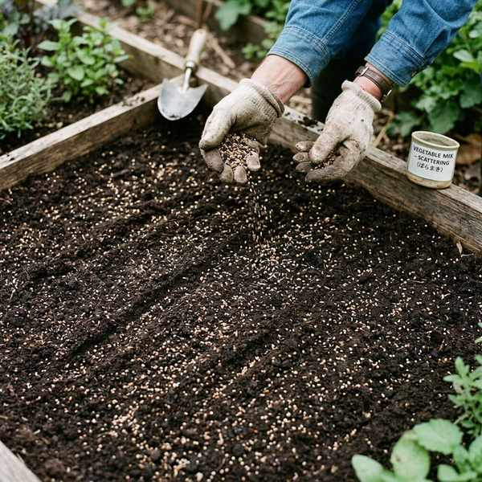
全体に均一にまく「ばらまき」
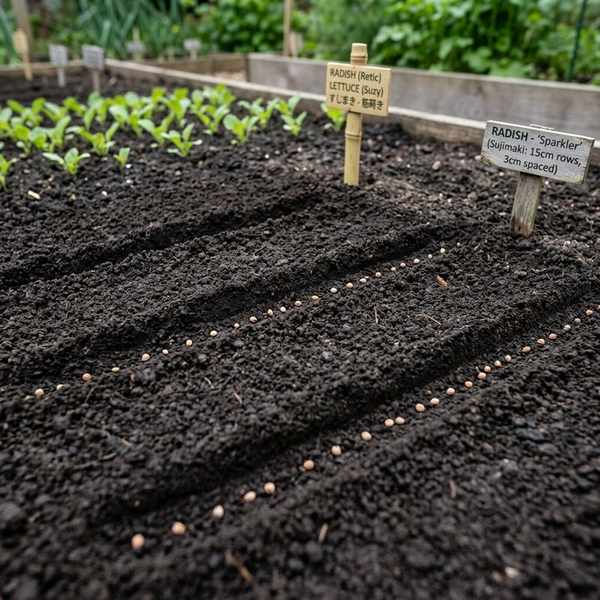
直線状の溝に沿ってまく「すじまき」
② 定植（ていしょく）
- 育苗用ポットなどで種からある程度大きく育てた苗を、畑やプランターなどの目的の栽培場所に植え付ける作業を定植といいます。
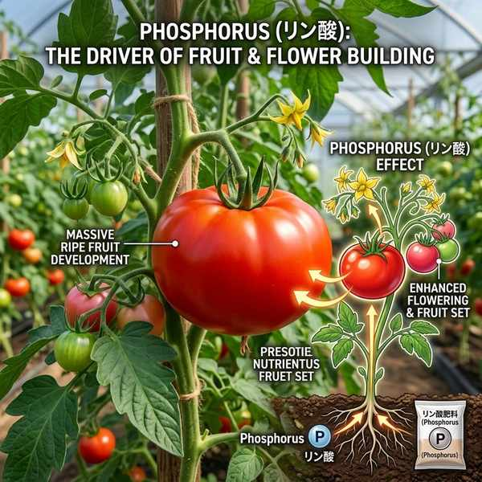
ポットから畑へ移し替える「定植」
2. 日常の育成管理作業
植物を健康に育て、収穫量を増やすための日常の作業です。
- 間引き（まびき）：発芽後、苗が混み合ってきたときに、発育の悪いものを抜き取って元気なものを残す作業。隙間を空けて光や風を通し、栄養を行き渡らせます。
- 誘引（ゆういん）：茎や枝を支柱に結びつけて形を整えたり、風で倒れたりするのを防ぐ作業。
- 摘芽（てきが）：トマトなどの栽培において、わき芽（えき芽）を摘み取る作業。栄養が余分な葉や枝にいかないようにし、果実に栄養を集中させます。
- 摘心（てきしん）：茎の先端の芽（主枝の先端）を摘み取ることで、横枝（側枝）の成長を促したり、草丈をコントロールする作業。
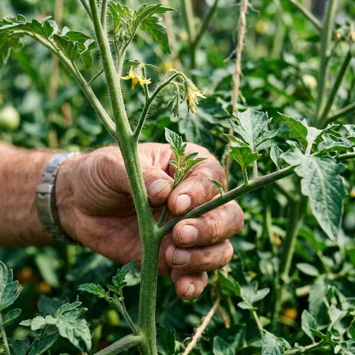
混み合った苗を抜き取る「間引き」
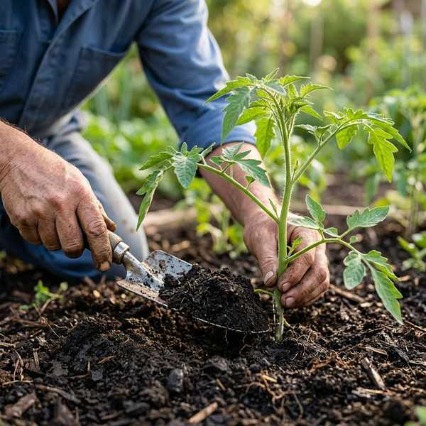
支柱に固定して倒伏を防ぐ「誘引」
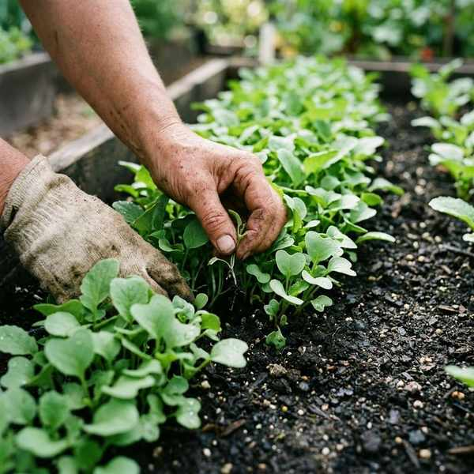
不要なわき芽を摘み取る「摘芽」
3. 土壌環境と肥料
① 土の構造
- 団粒構造（だんりゅうこうぞう）：土の細かい粒子がくっつき合って小さな塊（団子状）になった構造。隙間が多くあるため、通気性・保水性・排水性（水はけ）がすべて良いという、植物の成長に最も適した土壌環境です。
- 単粒構造（たんりゅうこうぞう）：土の粒子がバラバラで隙間がない状態。水はけや通気性が悪い。
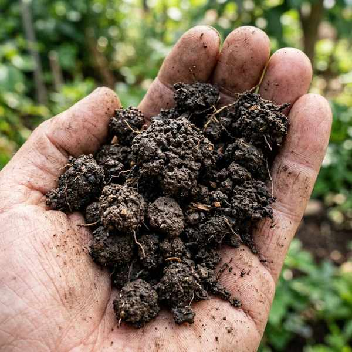
植物が育ちやすい隙間のある「団粒構造」
② 肥料の三要素（窒素・リン酸・カリウム）
| 要素名（アルファベット記号） | 通称・主な働き | 不足時（欠乏症）の症状 |
|---|---|---|
| 窒素（N） | 「葉肥（はごえ）」 葉や茎の成長を促す。 |
葉の色が黄色くなり、育成が著しく遅れる。 |
| リン酸（P） | 「実肥（みごえ）」 花や実、根の成長を促す。 |
開花や結実が遅れ、品質が悪くなる。 |
| カリウム（K） | 「根肥（ねごえ）」 光合成を盛んにし、根や茎を丈夫にする。 |
根の発育が悪くなり、病気や寒さに弱くなる。 |
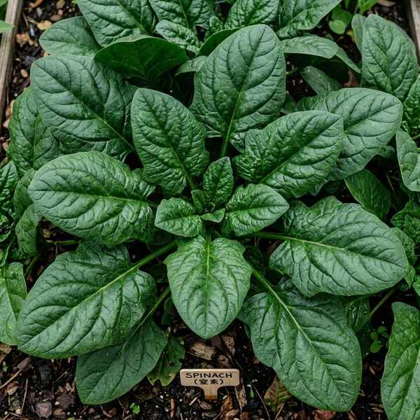
窒素が不足し葉が黄色くなった様子
③ 肥料の種類と与える時期
- 有機質肥料：油かすや鶏ふんなど動植物を原料とする肥料。土壌中の微生物に分解されてから効くため、効果がゆっくり長続きする。
- 無機質（化学）肥料：鉱物などから化学的に作られた肥料。水に溶けやすく、即効性がある。
- 元肥（もとごえ）：定植や種まきの前に、あらかじめ土に混ぜておく肥料。
- 追肥（ついひ）：成長に合わせて、栽培の途中で追加して与える肥料。
4. 栽培方法と先端技術
① 栽培環境
- 栽培ごよみ：作物の地域に応じた種まきや収穫の適期を示した栽培カレンダー。
- 露地栽培（ろじさいばい）：温室などの施設を使わず、屋外の自然な畑で育てる方法。
- 施設栽培：温室やビニールハウスなどを使って温度や光を管理して育てる方法。
- 連作障害（れんさくしょうがい）：同じ場所に同じ科の作物を連続して栽培することで、土の栄養が偏ったり病害虫が増えて生育が悪くなる現象。
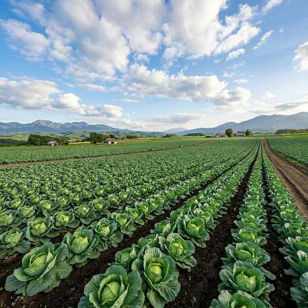
自然環境下で育てる「露地栽培」
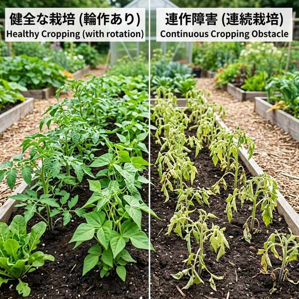
同じ科の連作により土壌環境が悪化する
② スマート農業
- スマート農業：IoT（モノのインターネット）やAI（人工知能）、自動トラクター、ドローンなどを活用し、省力化や高品質化を図る先端の農業技術。
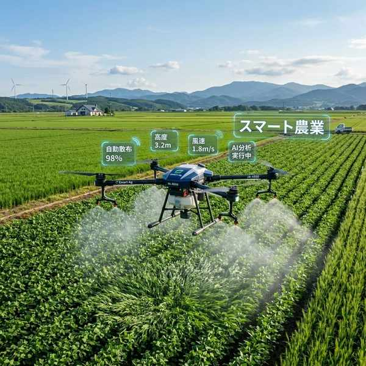
ドローン等で状況分析や防除を行うスマート農業
5. 飼育と水産業の工夫
- 家畜（かちく）：肉や卵、乳などを得るために、野生動物を品種改良して飼育している動物（牛、豚、鶏など）。
- 動物福祉（アニマルウェルフェア）：家畜にストレスや苦痛をできるだけ与えない快適な環境で飼育するという、世界的な考え方。
- 養殖（ようしょく）：いけす等で、人の手によって水産生物を卵から出荷サイズまで管理して育てる技術。
- 栽培漁業（放流）：卵から稚魚の時期までを施設で安全に育ててから海や川に放流し、自然に育ったものを漁獲する工夫。
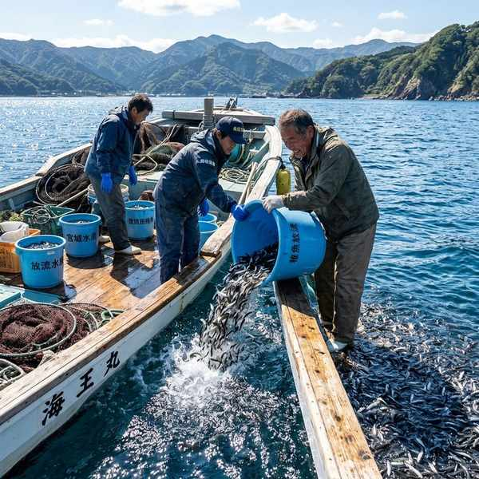
いけすで管理し育てる「養殖」
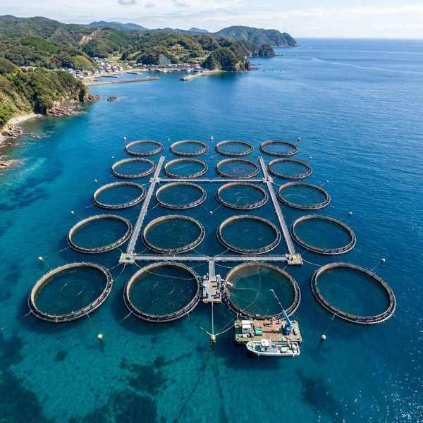
稚魚を育てて自然に放す「栽培漁業」
🔥 定期テスト対策・暗記のコツ
① 肥料の三要素の覚え方
「窒素は葉（ちっそ ➔ 葉っぱの緑色）」「リン酸は実（リンシャン ➔ シャンシャン実がなる）」「カリウムは根（カリ ➔ カリッと硬い根っこ）」。不足時に「葉が黄色くなるのは窒素」と結びつけて覚えましょう！
② 団粒構造のメリット
「水はけが良くて、かつ保水性も良い」という矛盾するようなメリットが両立するのが団粒構造です。塊と塊の間の大きな隙間から水が抜け、塊の中の細かな隙間に水が蓄えられるためです。記述問題の定番です。
③ 養殖と栽培漁業の決定的な違い
「最後まで人の手で管理する ➔ 養殖」「途中で海や川に放流する ➔ 栽培漁業」。この放流の有無がテストで非常に重要視されます。